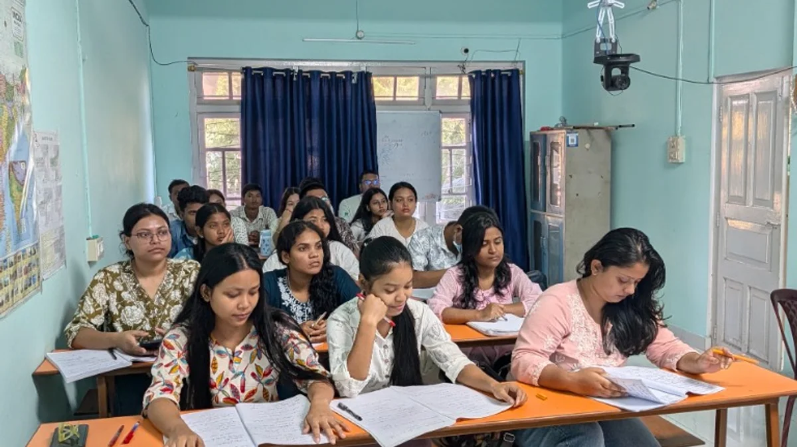
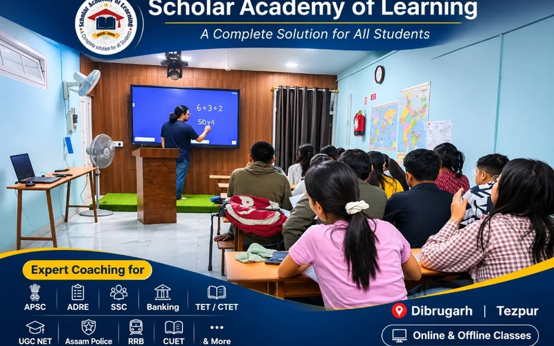
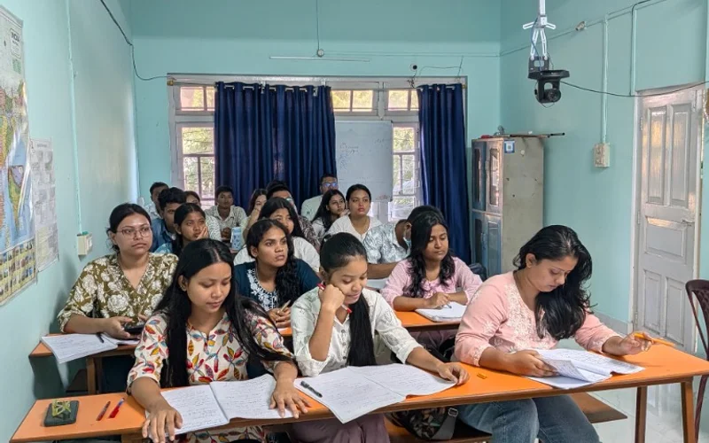
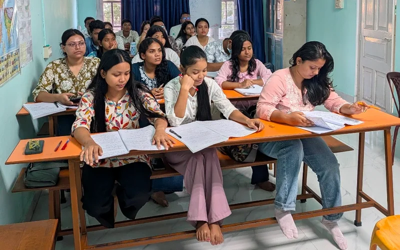

Best APSC Coaching in Tezpur for APSC CCE Preparation
Prepare for the Assam Civil Services examination at Scholar Academy of Learning in Tezpur. Access structured classroom coaching, comprehensive Assam General Studies coverage, continuous answer writing mentorship, and regular mock tests right at Murha Teteli, Tezpur.

Why Choose Scholar Academy for APSC in Tezpur?
Scholar Academy brings disciplined classroom pedagogy, experienced faculty, and rigorous civil services test series to students across Sonitpur, Biswanath, Darrang, and Central Assam.
Integrated Prelims & Mains Syllabus
Systematic coverage of all General Studies modules structured to prepare candidates concurrently for Prelims multiple-choice questions and Mains descriptive essays.
In-Depth Assam GS Specialization
Dedicated lecture modules covering Assam's ancient to modern history, socio-political movements, tribal ethnography, state budget, and environmental issues.
Systematic Answer Writing Practice
Regular answer writing drills focusing on introduction framing, structured subheadings, comparative analysis, and concise conclusions required by APSC examiners.
Rigorous Simulated Mock Tests
Frequent timed tests with OMR evaluation for Prelims and complete 3-hour descriptive tests for Mains, simulating real commission examination conditions.
Peaceful Library & Study Resources
Well-maintained study resources with standard NCERTs, civil service journals, newspapers, and reference materials available for student revision.
One-on-One Faculty Guidance
Accessible faculty mentors ready to clear individual doubts, guide optional selection strategy, and evaluate personal study schedules.
Current Affairs & Editorial Discussions
Daily analysis of The Assam Tribune, The Hindu, and government press releases, connecting current events with static syllabus themes.
Weekend Batches for Working Candidates
Specialized weekend scheduling catering to working teachers, corporate staff, and Tezpur University students managing tight academic routines.
About the APSC Combined Competitive Examination (CCE)
The Assam Public Service Commission CCE is the premier recruitment gateway for civil services in Assam. The examination is designed to identify candidates with strong analytical skills, integrity, administrative aptitude, and a deep understanding of Assam's socio-economic landscape.
With the alignment of the syllabus to the UPSC civil services pattern, candidates with a strong conceptual base and structured answer writing ability enjoy a marked competitive advantage.
Key Services Recruited via APSC
Qualifying APSC CCE secures appointments to prestigious executive and administrative positions:
- Assam Civil Service (ACS Jr. Grade)
- Assam Police Service (APS Jr. Grade)
- Block Development Officer (BDO)
- Assam Land & Revenue Service (ALRS)
- Superintendent of Taxes
- Assistant Registrar of Co-op Societies
- Labour Officer / Inspector of Taxes
- District Transport Officer (DTO)
APSC Prelims Foundation Program in Tezpur
Our Tezpur centre provides thorough coaching across the 10 core subjects comprising GS Paper I and CSAT Paper II, ensuring students clear the preliminary cutoff with high confidence.
Indian Polity & Constitution
Constitutional articles, parliamentary procedures, federal structure, local self-governance, and fundamental rights.
Assam History, Art & Heritage
Ancient Pragjyotisha & Kamarupa, Ahom administrative systems, Moamoria rebellion, freedom fighters, and folk arts.
History of India & Modern Period
Ancient and medieval epochs, Mughal administration, British colonial policies, and the Indian National Movement.
Geography of India & Assam
Geomorphology, climate patterns, Brahmaputra basin physiography, soil profiles, natural vegetation, and mineral resources.
Indian Economy & Assam Fiscal Health
Economic planning, fiscal deficit, banking regulations, tea & oil industry in Assam, and state budget priorities.
Ecology, Biodiversity & Forests
Kaziranga, Manas, Nameri national parks, conservation biology, endangered species protection, and climate resilience.
General Science & Technological Trends
Core physics, chemistry, biology principles, satellite programs, defense indigenous developments, and digital tech.
Current Affairs & Regional Developments
State, national, and international affairs, government policies, infrastructure initiatives, and multilateral summits.
Logical Reasoning & Analytical CSAT
Deductive logic, direction tests, seating arrangements, coding-decoding, and critical thinking for Paper II qualification.
Quantitative Aptitude & Comprehension
Data interpretation, ratios, percentages, averages, and English comprehension passages for guaranteed CSAT qualifying marks.
APSC Mains Comprehensive Mentorship
The Mains stage consists of 6 descriptive papers carrying 1,500 marks. Success requires sustained practice, high writing speed, clear articulation, and deep subject matter synthesis.
Mains Mentorship in Tezpur
Our Tezpur centre emphasizes daily disciplined writing to build speed, clarity, and keyword precision:
- Rigorous Evaluation: Detailed correction of answer copies with actionable remarks on structure, content, and flow.
- Essay Structuring: Developing multidimensional thesis statements, thematic transitions, and philosophical balance.
- Assam GS Mastery: Complete coverage of Assam Paper V questions, government schemes, and local governance challenges.
- Ethics Case Studies: Practical approach to resolving ethical dilemmas under administrative constraints.
Our 7-Step Preparation Methodology
A comprehensive, phased preparation strategy designed to transform dedicated effort into measurable civil services success.
NCERT & Core Concept Foundation
Building strong foundations in history, geography, polity, and economy through standard school and NCERT textbooks.
Advanced General Studies & Assam Modules
Progressing into in-depth standard reference literature and specialized Assam governance, history, and geographical modules.
Daily Current Affairs & Editorial Review
Analyzing state and national news daily from The Assam Tribune, PIB, and specialized civil service journals.
Prelims MCQ Drills & Elimination Technique
Practicing timed objective tests with negative marking calculation to develop speed, accuracy, and elimination strategies.
Mains Answer Writing & Faculty Review
Writing daily answers under timed conditions and receiving direct feedback on presentation, keywords, and factual depth.
Full-Length Simulation Mocks
Sitting for comprehensive Prelims and Mains mock test series that recreate the exact duration, pressure, and format of APSC exams.
Interview Preparation & Mock Panels
Undergoing personality assessment sessions, mock interview panels, current affairs briefings, and communication guidance.
Course Batches & Schedules in Tezpur
Choose a batch schedule tailored to your lifestyle, whether you are a full-time student, university scholar, or working professional.
Regular Foundation Batch
Comprehensive daily classroom coaching covering Prelims and Mains sequentially for dedicated full-time candidates.
Weekend Executive Batch
Structured specifically for teachers, bank employees, government staff, and postgraduate university scholars across Sonitpur.
2-Year Integrated Foundation
Designed for undergraduate students from Darrang College, Tezpur University, and regional colleges preparing early for civil services.
Classroom Infrastructure & Learning Facilities
A conducive study environment with modern teaching aids, quiet reading rooms, and test practice facilities in the heart of Tezpur.

Modern Air-Conditioned Classrooms
Comfortable, technologically equipped classrooms designed to support interactive lectures, visual map presentations, and conceptual discussions.

Faculty Consultation & Answer Review
Dedicated mentor consultation areas where faculty members review handwritten descriptive answers and provide one-on-one constructive feedback.

OMR & CBT Test Center
Simulated examination environment where students practice offline OMR sheets and digital computer-based tests with timer discipline.
Curated Study Materials & Mock Test Ecosystem
Our Tezpur students receive comprehensive, regularly updated learning resources aligned strictly with the latest APSC patterns.
Comprehensive Course Booklets
Subject-specific reference booklets condensing voluminous standard texts into organized, exam-focused study material.
Dedicated Assam GS Compendiums
Extensive study modules covering Assam's regional history, geographical features, tribal customs, and recent state government welfare policies.
Topic-Wise PYQ Analysis
Detailed analysis of previous years' APSC CCE question papers to help students understand high-yield focus areas and emerging question trends.
PYQscore.in Test Portal Access
Direct access to our digital mock portal PYQscore.in featuring thousands of curated questions, timed mock exams, and analytics.
Conveniently Located at Murha Teteli
Our Tezpur campus is centrally situated at Murha Teteli, near Mousumi Hotel and the ASTC Bus Stand. This location provides convenient transit connectivity for students from Tezpur city, Darrang College, Tezpur University, Biswanath Chariali, Mangaldai, and Nagaon.
Other Competitive Exam Courses at Scholar Academy
Scholar Academy of Learning offers classroom preparation across a wide array of state and national recruitment exams.
Frequently Asked Questions: APSC in Tezpur
Common queries regarding APSC CCE batches, syllabus, study materials, and admissions at our Tezpur campus.
Scholar Academy of Learning in Tezpur offers structured civil services guidance with experienced mentors, dedicated Assam GS modules, comprehensive Prelims + Mains study material, regular descriptive answer writing drills, and an accessible central location at Murha Teteli.
The Tezpur campus serves students and working professionals from Sonitpur, Biswanath, Darrang (Mangaldai), Nagaon, Morigaon, Udalguri, and North Lakhimpur looking for high quality classroom civil services preparation.
Yes. Our Tezpur centre conducts dedicated Saturday and Sunday weekend batches specially designed for teachers, government servants, private sector professionals, and college students who require a weekend-only study routine.
Students participate in regular answer writing drills where faculty mentors review handwritten answers, point out structural errors, suggest relevant keywords and data points, and track improvement over time through one-on-one evaluations.
Yes. We provide full-length offline OMR mock tests for Prelims (GS Paper 1 & CSAT Paper 2) and 3-hour descriptive tests for Mains, complemented by regular online testing on our affiliated platform PYQscore.in.
Our Tezpur campus is located at Murha Teteli, near Mousumi Hotel and ASTC Bus Stand, Tezpur, Assam - 784001. It is easily reachable from all parts of Tezpur and surrounding towns. You are welcome to visit Monday through Saturday between 8:00 AM and 7:30 PM.
You can call our Tezpur admissions helpline directly at +91 95086 02878, reach us via WhatsApp, or submit an admission inquiry on our website to schedule a free counseling session.
Begin Your APSC Preparation in Tezpur Today
Join Central Assam's dedicated civil services coaching academy. Experience the faculty guidance, study materials, and rigorous testing you need to achieve your administrative goals.